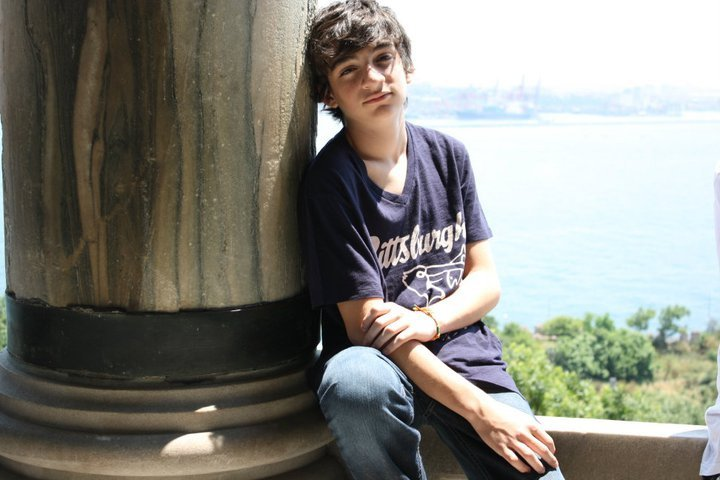

|
Iago Rainha MendesData de nascimento: 27/09/1999 Cidade: São Paulo Curso: Engenharia de Computação Semestre: 2° E-mail: iagorm@al.insper.edu.br Facebook: https://www.facebook.com/iago.mendes |
|
Iago Rainha MendesData de nascimento: 27/09/1999 Cidade: São Paulo Curso: Engenharia de Computação Semestre: 2° E-mail: iagorm@al.insper.edu.br Facebook: https://www.facebook.com/iago.mendes |
 |
Vitor CarretaData de nascimento: 19/10/1998 Cidade: São Paulo Curso: Engenharia Mecatrônica Semestre: 2° E-mail: vitorca1@al.insper.edu.br Facebook: https://www.facebook.com/vitor.carreta |
 |
Jorge AugustoData de nascimento: 05/04/1998 Cidade: São Paulo Curso: Engenharia de Computação Semestre: 2° E-mail: jorgeavbe@al.insper.edu.br Facebook: https://www.facebook.com/jorgeaugusto.ehrhardt |
|  |
Rodrigo ReyData de nascimento: 17/03/1998 Cidade: São Paulo Curso: Engenharia Mecânica Semestre: 2º E-mail: rodrigocr1@al.insper.edu.br Facebook: https://www.facebook.com/rod.crespo |